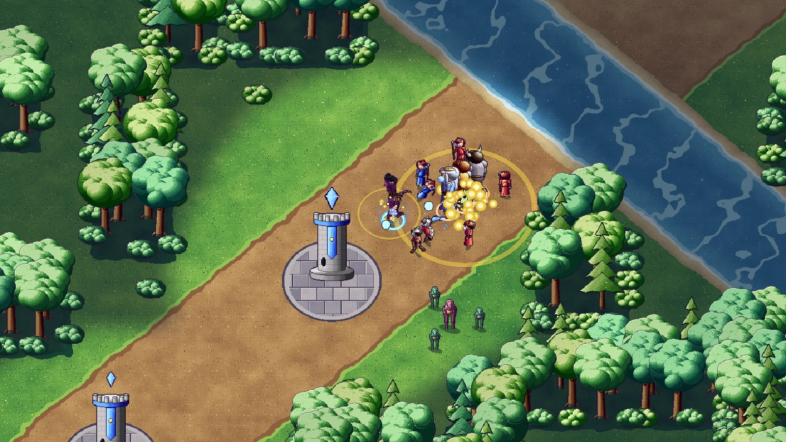
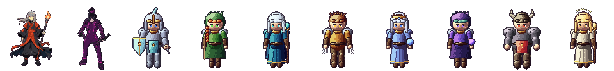
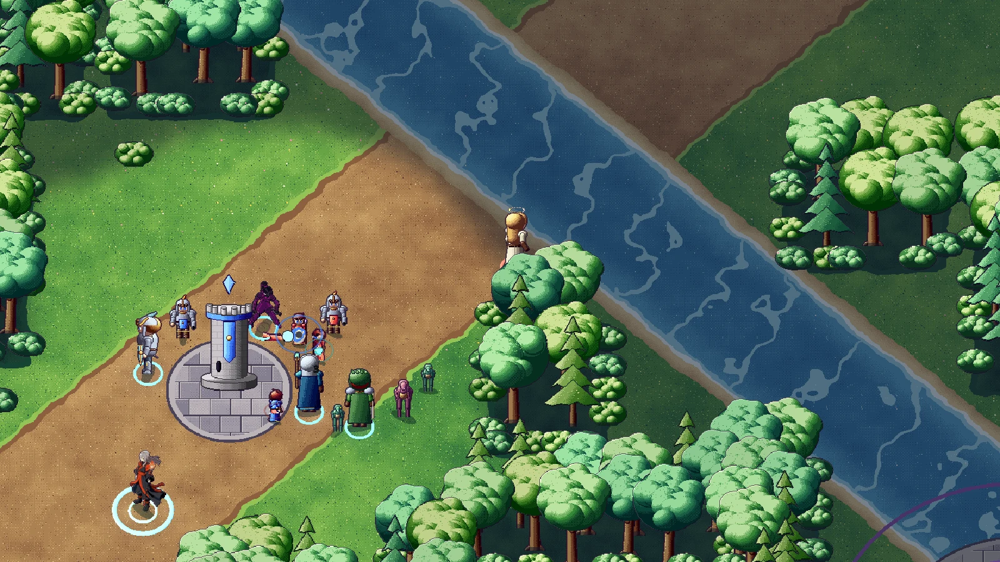
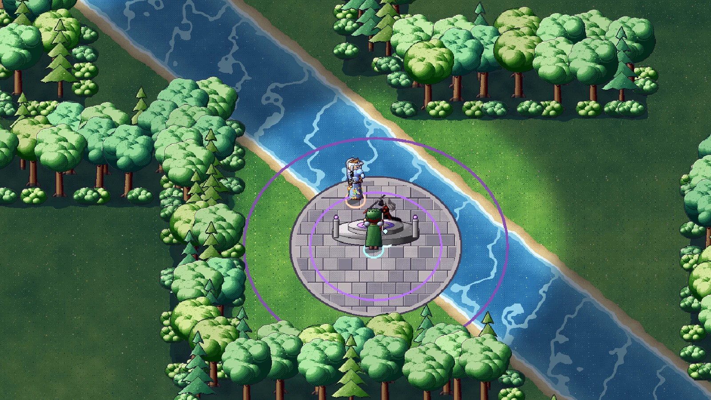

Devlog #7: Going pixel art
Relic Protocol has a new look: hand-shaded 2D pixel art in the style of the 32-bit console RPGs I grew up on, shown from a fixed three-quarter view. The game underneath (the map, the rules, the servers) hasn't changed. Only how it's drawn has.

Why pixel art
3D models and code-built stickmen both had the same problem: making the motion feel alive took far more time than I have as one person. Sprites solve that. Each hero is a set of sprite sheets seen from eight directions, so every frame can be drawn to read clearly from the camera, and fluid animation is a matter of adding frames.

Sprite heroes and minions
Every hero and lane minion is now a sprite with idle, run, attack, cast and death animations in all eight directions, team-coloured where it matters, and with a flash when hit. Sprites are shaded with colour ramps, dithering, a rim light and a coloured outline, so they look hand-painted rather than shrunk down. Orin Ash is the first hero to get a fully redrawn sprite set with many more frames per move, and his sprites now play every one of them for smoother motion.

A painted pixel map
The whole map is painted in the same style: grass, dirt lanes, a river with sandy banks and glints on the water, the jungle floor and stone plazas. Trees, bushes, towers, cores and the altar dais are pixel sprites too, and the jungle wolves, raptors, toads and crabs got their own beast sprites. The camera moves in whole pixels, so nothing shimmers as it scrolls.

A fixed camera
The camera zoom is now fixed, so every player sees the same amount of the map and the pixel art always shows at the size it was drawn for.
Next
Redrawing the rest of the roster with full animation sets, and getting the new look into testers' hands.
Proof of date
git commit 16c384405f3addf484b2c58f461a651f65fd0ab0